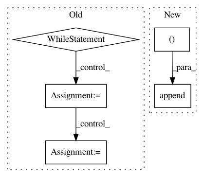

b2bcab711d333442c282cf64c66a9fac2c93218f,rllib/utils/sgd.py,,minibatches,#Any#Any#,48
Before Change
slices = []
if samples.seq_lens:
seq_no = 0
while i < samples.count:
seq_no_end = seq_no
actual_count = 0
while actual_count < sgd_minibatch_size and len(
samples.seq_lens) > seq_no_end:
actual_count += samples.seq_lens[seq_no_end]
seq_no_end += 1
slices.append((seq_no, seq_no_end))
i += actual_count
seq_no = seq_no_end
else:
while i < samples.count:
slices.append((i, i + sgd_minibatch_size))
i += sgd_minibatch_size
After Change
minibatch_size += seq_len
// Complete minibatch -> Append to slices.
if minibatch_size >= sgd_minibatch_size:
slices.append((start_pos, start_pos + sgd_minibatch_size))
start_pos += sgd_minibatch_size
if minibatch_size > sgd_minibatch_size:
overhead = minibatch_size - sgd_minibatch_size
start_pos -= (seq_len - overhead)
In pattern: SUPERPATTERN
Frequency: 3
Non-data size: 5
Instances
Project Name: ray-project/ray
Commit Name: b2bcab711d333442c282cf64c66a9fac2c93218f
Time: 2020-12-20
Author: sven@anyscale.io
File Name: rllib/utils/sgd.py
Class Name:
Method Name: minibatches
Project Name: NifTK/NiftyNet
Commit Name: bd333dd43d69b26015eb3f201afe1772ba701a41
Time: 2018-05-07
Author: wenqi.li@ucl.ac.uk
File Name: niftynet/contrib/dataset_sampler/sampler_uniform_v2.py
Class Name: UniformSampler
Method Name: layer_op
Project Name: google/deepvariant
Commit Name: 13a85e08e713f374933bc4fc082f67e1fa8dcd02
Time: 2018-02-20
Author: cym@google.com
File Name: deepvariant/util/io_utils.py
Class Name:
Method Name: read_shard_sorted_tfrecords